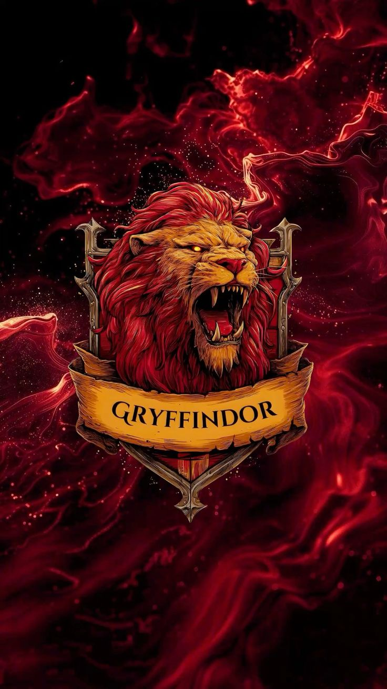
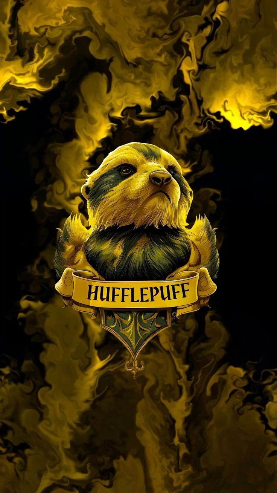
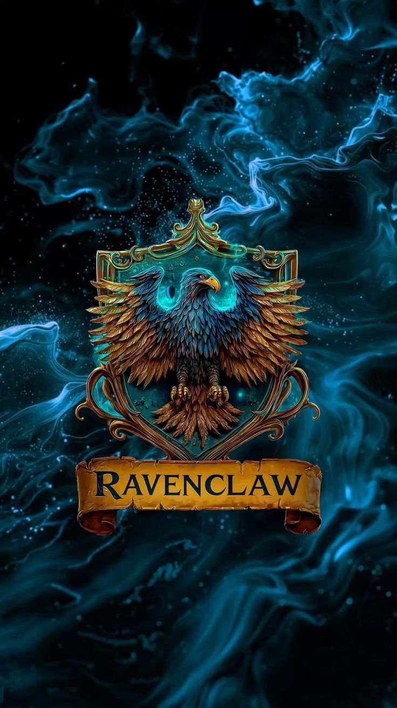
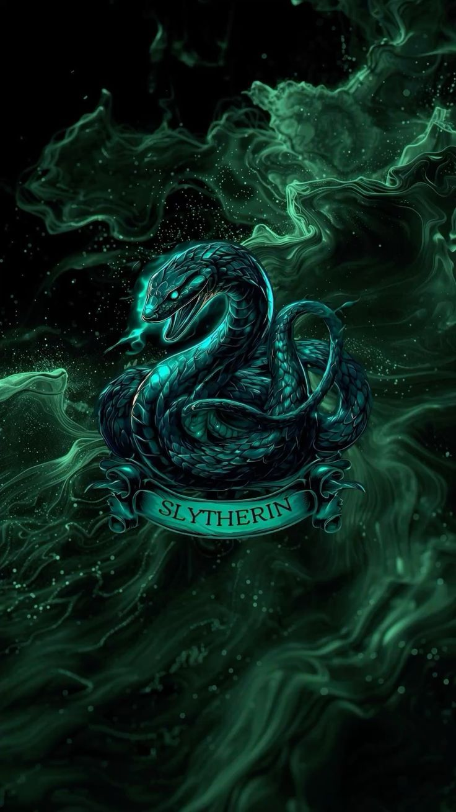
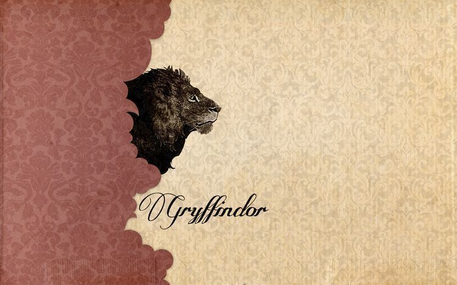
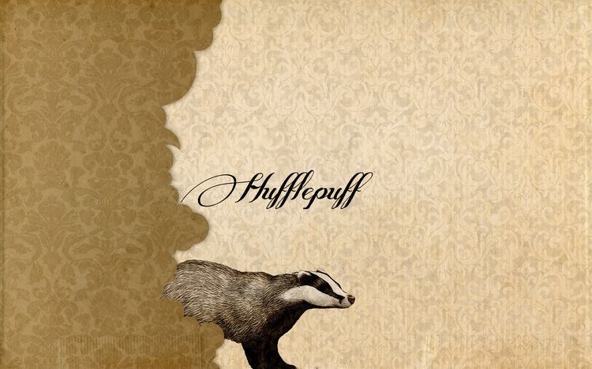
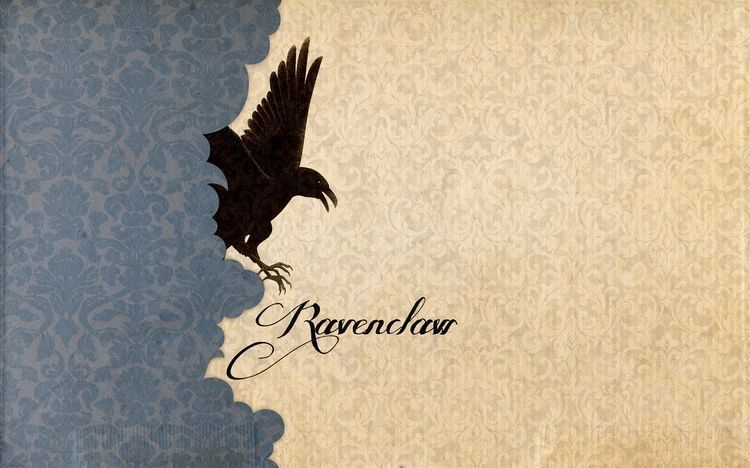
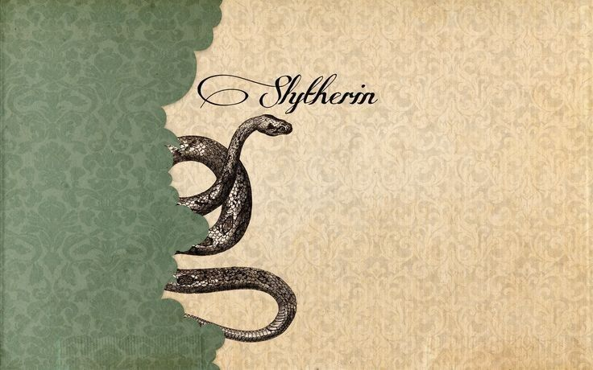

Marcador de la competencia de las Casas

Puntos: 120

Puntos: 110

Puntos: 100

Puntos: 90
Historia de la Copa de las Casas
La Copa de las Casas es una competencia anual que enfrenta a las cuatro casas de Hogwarts: Gryffindor, Hufflepuff, Ravenclaw y Slytherin. A lo largo del año, los estudiantes ganan puntos para sus casas a través de su desempeño académico, su comportamiento y su participación en actividades escolares. Los puntos se otorgan por logros académicos, victorias en competiciones deportivas, actos de valentía, lealtad y sabiduría, entre otros méritos. Al final del año escolar, la casa con más puntos es declarada ganadora de la Copa de las Casas. La competencia fomenta el espíritu de equipo, la camaradería y el orgullo por la casa a la que pertenecen los estudiantes. Es un evento muy esperado por todos los miembros de la comunidad de Hogwarts.

Esta casa se destaca por su valentía, coraje y determinación. Famosos miembros como Harry Potter, Ron Weasley y Hermione Granger pasaron por aqui. Lo que podes encontrar en nuestra Sala Común es una chimenea, sillas cómodas, y una gran ventana que da a la torre de Gryffindor.
Esta casa se caracteriza por su lealtad, paciencia y dedicación. Estudiantes como Cedric Diggory y Nymphadora Tonks formaron parte de esta casa. En la Sala Común de Hufflepuff encontrarás un ambiente acogedor con muebles de madera, una chimenea y una gran ventana que da al bosque prohibido.
Esta casa valora la inteligencia, la creatividad y la sabiduría. Luna Lovegood y Cho Chang son algunos de sus miembros más conocidos. La Sala Común de Ravenclaw se encuentra en una torre alta y ofrece vistas panorámicas del castillo. Está decorada con estatuas, libros y objetos relacionados con el conocimiento.
Esta casa se distingue por su ambición, astucia y determinación. Estudiantes como Draco Malfoy y Severus Snape formaron parte de esta casa. La Sala Común de Slytherin se encuentra en las mazmorras del castillo, con una atmósfera misteriosa y decorada con elementos relacionados con el agua y la serpiente.